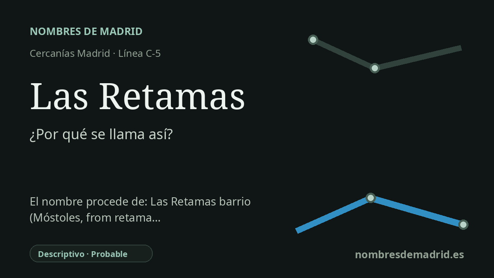

Publicado el · Investigación de Nombres de Madrid · Cómo verificamos cada origen · 7 fuentes consultadas
Respuesta rápida
Las Retamas es un topónimo botánico: las retamas son arbustos mediterráneos de flores amarillas. La estación parece tomar el nombre de la Avenida de las Retamas y del entorno alcorconero inmediato, más que de un acto documentado que aluda a la vegetación concreta del apeadero.
La historia del nombre
El nombre Las Retamas debe leerse ante todo como un topónimo local. Renfe sitúa el apeadero sobre un terraplén en la avenida de Móstoles, en el cruce con la avenida de las Retamas, junto a Parque Oeste en Alcorcón. Esa ubicación convierte a la avenida y al entorno de Las Retamas/Prado de Santo Domingo en la fuente inmediata más segura del nombre ferroviario.
Detrás del nombre de la calle está la palabra retama. En español designa matas y arbustos de matorral mediterráneo: plantas resistentes, muy ramificadas, de hojas escasas y a menudo con flores amarillas. La RAE deriva la palabra del árabe hispánico ratama, procedente del árabe clásico ratamah, de modo que la estación conserva un pequeño arabismo botánico dentro del mapa suburbano del suroeste madrileño.
La cronología de transporte es algo más compleja que un simple año de apertura. La prensa contemporánea informó de que el ministro de Fomento, el presidente regional y el alcalde de Alcorcón inauguraron el apeadero de Cercanías Las Retamas el 31 de julio de 2002. Sin embargo, la página de localizaciones de Renfe indica que la estación se abrió al público en 2003 en la línea C-5, por lo que conviene conservar ambas fechas hasta que un expediente de Adif o Renfe aclare la diferencia entre inauguración y servicio público.
Las Retamas pertenece también a una etapa de rápido crecimiento urbano. El apeadero se construyó para atender Parque Oeste, nuevas viviendas, el entorno de la Universidad Rey Juan Carlos y las zonas comerciales cercanas. El Archivo Municipal de Alcorcón señala que los proyectos de obra de la estación son de 1999 y 2000 y que pasó a ser la tercera estación ferroviaria del municipio, tras San José de Valderas y Alcorcón.
El significado botánico es sólido. Es verosímil que el callejero recurriera a la retama como arbusto reconocible del paisaje seco madrileño, y la Comunidad de Madrid identifica Retama sphaerocarpa como un arbusto de hábitats mediterráneos, distribuido por gran parte de la península ibérica. Sin embargo, no está demostrado que el nombre de la estación se eligiera oficialmente porque hubiera retamas abundantes exactamente en esta parcela entre Alcorcón y Móstoles.